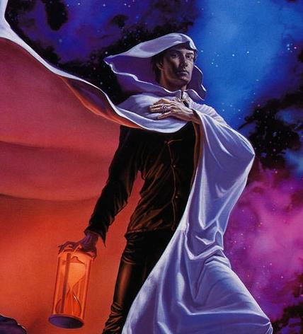

Forums galactiques > Taverne galactique : lieu de discussion informel > Machine a café [Rp!]
Pages : 1 2 ... 221 222 223 ... 443 444
| Hecate de Lunargent Réputation à la taverne : 293  04/08 ETU 15:33 | Score : 0 Détails Hecate se leva et s'avança vers lui. Elle lui tendit la main pour l'aider à se relever.
"Excusez moi, je vous ai fait peur, il semblerait." | ||
| Malik el Sami Réputation à la taverne : 62 04/08 ETU 15:38 | Score : 0 Détails Ecartant lentement le bras de son visage, le petit homme révèle un visage pâle, qui reprend cependant petit à petit ses couleurs. Voyant l'attitude du lenalis, il fait quelques petits pas en arrière, s'interrompant juste pour répondre à Hécate, gêné :
"Oooh, moi ! Oui ! Tout va bien, hein ! hein !" Rassuré par l'attitude de Léorique, il tend la main pour lui ébouriffer les cheveux et lui sourit, tout en jetant des coups d'oeil nerveux au chat... | ||
| Atheos Réputation à la taverne : 133  04/08 ETU 15:39 | Score : 0 Détails La porte s'ouvrit rapidement et Atheos fit son appartitiondans la salle d'un pas joyeux, il remarqua en premier lieu Locius qu'il salua d'un signe de tête puis il vit Léorique et Hecate vers qui il se dirigea aussitôt affichant un grand sourire.
" Bonjour..." Il s'arrêta devant l'homme bizar : " Bonjour, vous êtes nouveau ici ?" | ||
| général locius Réputation à la taverne : 626  04/08 ETU 15:40 | Score : 0 Détails En voyant athéos arriver:
Bonjour a vous athéos comment allez-vous aujourd'hui? | ||
| Leorique Réputation à la taverne : 191  04/08 ETU 15:42 | Score : 0 Détails Leorique soupire un moment et hausses des épaules, caressant son chat. « Oh, bonjour Atheos, vous allez bien ... ? »
Leorique finit son thé, l'air songeur, semblant déjà parti dans ses réflexions, baillant légerement. | ||
| Hecate de Lunargent Réputation à la taverne : 293 04/08 ETU 15:44 | Score : 0 Détails "Bonjour Atheos. Allez vous bien ?"
| ||
| Malik el Sami Réputation à la taverne : 62 04/08 ETU 15:45 | Score : 0 Détails "Hein ? Oui... oui."
Rougissant de l'intérêt des autres pour sa petite personne, Malik, fixa ses gros yeux sur Atheos et, hésitant, lui tendit une main moite et molle. "Malik el Sami... pour vous serviiiiiiir !" Il inclina la tête avant de retourner vers le distributeur de boissons, ne sachant quelle touche essayer cette fois-ci... | ||
| Atheos Réputation à la taverne : 133 04/08 ETU 15:51 | Score : 0 Détails Intriguer par le nouveau, il lacha simplement un "enchanté" avant de se diriger vers la machine pour se prendre un café. Puis revenant à la table de Léorique il s'assit et dit en regardant Léorique:
" Oh, je vais plus que bien aujourd'hui." | ||
| Leorique Réputation à la taverne : 191 04/08 ETU 15:54 | Score : 0 Détails L'albinos surtout en sortant de ses pensées ainsi. Il regarde Atheos en souriant
« Oh ... vraiment ? Une occasion spéciale a ce la ... ? en tout cas j'en suis heureux pour vous » il sourit légèrement. | ||
| Atheos Réputation à la taverne : 133 04/08 ETU 15:56 | Score : 0 Détails " Non même pas ! Je ne sais pas pourquoi;;;aujourd'hui je suis heureux !"
Dit il en souriant avant de plonger ses lèvres dans son café. | ||
| Leorique Réputation à la taverne : 191 04/08 ETU 16:00 | Score : 0 Détails « Ha ... oh ... c'est bien ça ... oui ... » il acquiesce de la tête et se replonge dans ses pensées, toujours reflechissant il caresse distraitement son chat.
| ||
| Malik el Sami Réputation à la taverne : 62 04/08 ETU 16:07 | Score : 0 Détails Essayant d'être discret, c'est-à-dire en jetant des coups d'oeil partout et en sautillant de nervosité, Malik introduisit une nouvelle pièce dans la machine, qui la lui rendit avec force tintements métalliques.
Glissant sa fausse pièce sous sa cape, il sifflota inocemment et réitéra la maneuvre avec une vraie. Puis, souriant, il revint vers Léorique et Atheos pour prendre place entre eux avec son thé, les dévisageant tour à tour en souriant, et soufflant un peu sur sa boisson... | ||
| Atheos Réputation à la taverne : 133 04/08 ETU 16:26 | Score : 0 Détails Regardant Malik, il lui adressa un sourire amicale et lui demanda:
" Alors mon cher, d'où venez vous ?" | ||
| Malik el Sami Réputation à la taverne : 62 04/08 ETU 16:35 | Score : 0 Détails Bombant légèrement le torse, Malik emprunta un ton mielleux empli de fausse modestie :
"Ôoh ! Je viens du Soleil Noir... Oui, Soleil Noir, c'est chez moi !" Il avança sa tête vers Atheos et fit courir son regard sur tout son corps : "C'est un monde tout petit et pas encore bien riche mais... ça vous intéresse, Maîîître ?" | ||
| Sanji Réputation à la taverne : 69  04/08 ETU 16:43 | Score : 0 Détails Sanji, adossé au mur, les mains dansles poches, la clope aux lèvres ne peut s'empêcher de sourire.
"Tu as un fan Atheos..." | ||
| Atheos Réputation à la taverne : 133 04/08 ETU 16:44 | Score : 0 Détails " Oula, ne m'appelez pas maître;;;cela est quelques peu dérangeant. Dites m'en plus sur votre peuple...enfin, si ça ne vous dérange pas..." Dit le jeune garçon un peu gêné.
Hecte, à côté de Léorique éttouffa un petit rire voyant la gêne d'Atheos. "Merci Sanji !" sur un ton neutre. | ||
| Malik el Sami Réputation à la taverne : 62 04/08 ETU 16:53 | Score : 0 Détails Gêné par la fumée qui arrivait à ses narines, le sombre petit homme se pencha sur sa tasse pour masquer l'odeur du tabac...
"Oh mon peuple hé hé oui ! Ah ça ils m'ont envoyé ici assez vilainement, hein !" Visiblement, Malik avait été "désigné" pour remplir les papiers à l'Académie, n'étant pas indispensable chez lui... "Enfin ils sont beaucoup beaucoup !" Puis, adoptant un air dégoûté : "Mais ils sont pas très gentils... enfin faut les comprendre, eux ils sont tous très grands..." Comme si une idée lui était passée par la tête, il s'approcha encore d'Atheos pour lui chuchoter de façon à ce que tout le monde l'entende : "Mais je suis plus malin !" Revenant à sa position initiale, il sourit et hocha la tête. Puis il avala son thé d'une seule gorgée. | ||
| Atheos Réputation à la taverne : 133 04/08 ETU 17:13 | Score : 0 Détails Surpris par le récit de l'homme Atheos ne saait pas trop quoi répondre. Il but une gorgée de café chaud:
" Ah...euh, je suis désolé pour vous....enfin, vous verrez ce n'est pas trop mal ici, surtout dans cette salle." | ||
| Hecate de Lunargent Réputation à la taverne : 293 04/08 ETU 17:27 | Score : 0 Détails Hecate qui était resté dans son coin sans mot dire un petit moment se releva pour aller se cherche un café.
"Excusez mon manque de loquacité, je commence à m'endormir..." | ||
| Malik el Sami Réputation à la taverne : 62 04/08 ETU 17:30 | Score : 0 Détails Contrairement à son habitude apparente, Malik reprit la parole aussitôt pour demander à Atheos :
"Et chez vous, ils sont comment ? Ils sont méchants, aussi ? Mais vous m'avez l'air intelligent, oh oui hihi !" |
Pages : 1 2 ... 221 222 223 ... 443 444
Forums galactiques > Taverne galactique : lieu de discussion informel > Machine a café [Rp!]